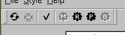

XMM-Newton Science Analysis System
odfbrowser (odfbrowser-1.5.1) [xmmsas_20170112_1337-16.0.0]
The toolbar contains buttons, that allow the user to filter information and to configure and run the programs on the selected exposures.

If you hover your mouse over one of those buttons, some text will pop-up, that gives you additional information about the button.
Some buttons will only become active once you selected one or more exposures.
XMM-Newton SOC/SSC -- 2017-01-12